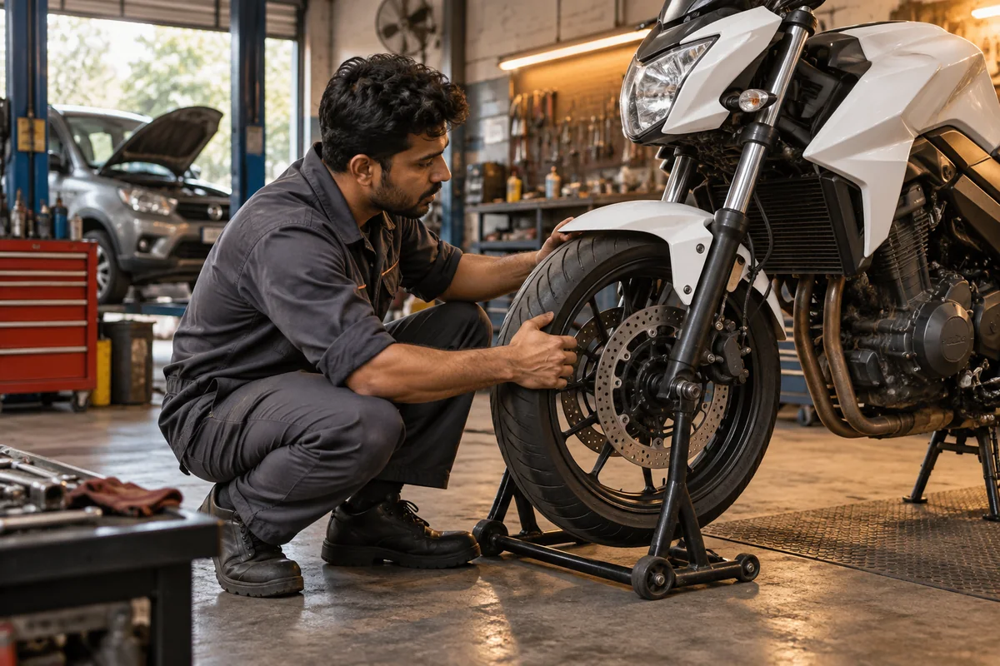
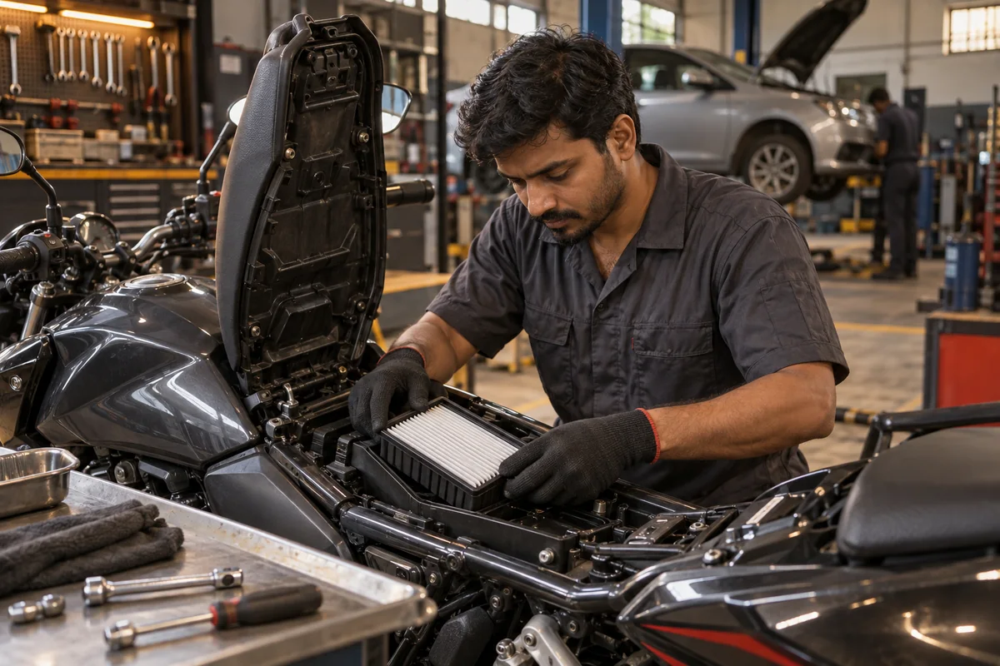
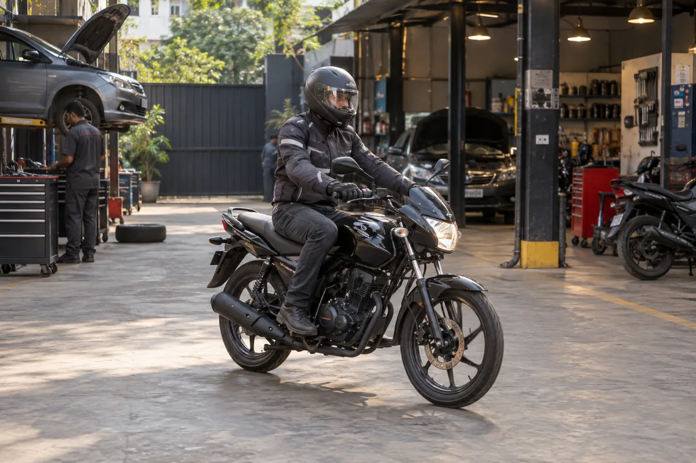
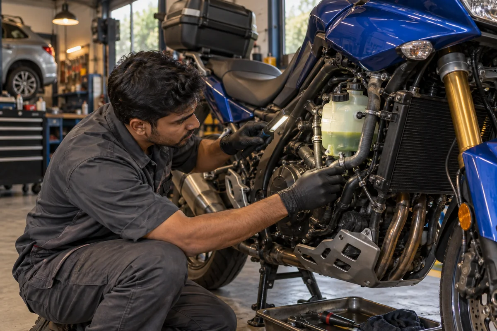
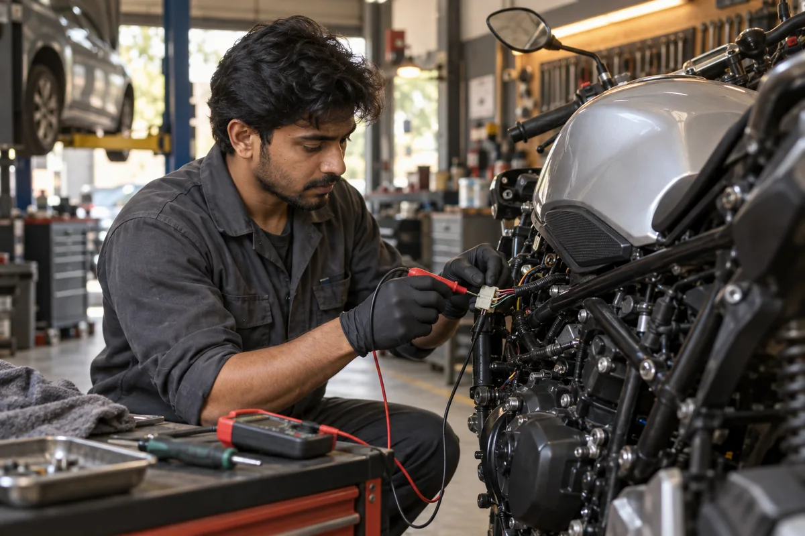
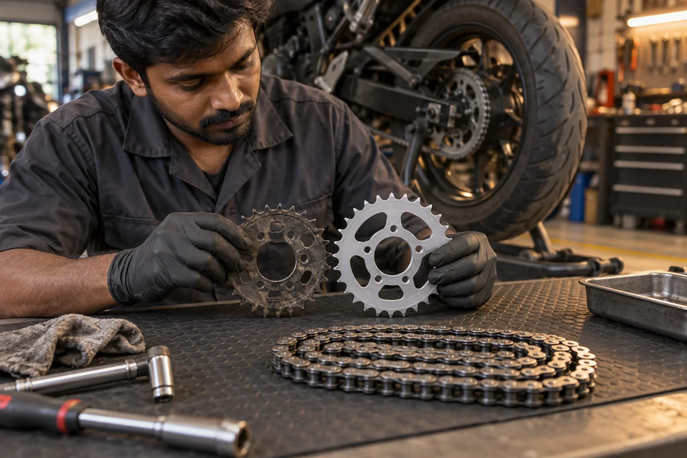
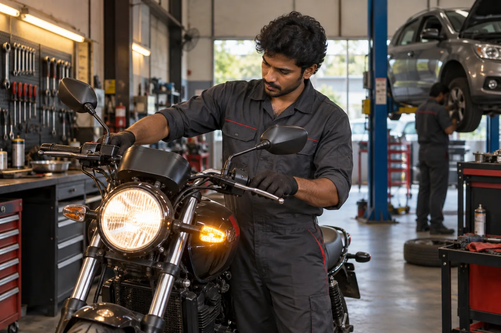

01
Listen
You describe the ride, the noise, the change or the concern in your own words.
Every good motorcycle repair starts with accurate diagnosis. Tell us what the bike is doing; we inspect, explain and only then turn the spanners.

You describe the ride, the noise, the change or the concern in your own words.

We inspect and test until the symptom has a cause—not a guess attached to it.

You see the proposed work and estimate first. Once approved, we carry out the agreed service.

Completed work is checked, documented and handed over with next-step advice.
A focused workshop for routine maintenance, wear items and structured diagnostics across commuter, touring and performance motorcycles.
Browse services
Routine service, oil, brakes, chain and batteries.

Fault tracing, scan data and practical mechanical checks.

Tyres and wear parts fitted with the right setup.

Final inspection and a clear handover every time.
We will take it from there—with a proper inspection.